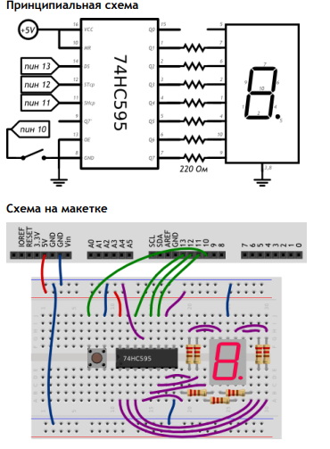

#define DATA_PIN 13 // пин данных (англ. data)
#define LATCH_PIN 12 // пин такта (англ. clock)
#define CLOCK_PIN 11 // пин строба (англ. latch)
#define BUTTON_PIN 10
int clicks = 0;
boolean buttonWasUp = true;
byte segments[10] = {
0b01111101, 0b00100100, 0b01111010, 0b01110110, 0b00100111,
0b01010111, 0b01011111, 0b01100100, 0b01111111, 0b01110111
};
void setup()
{
pinMode(DATA_PIN, OUTPUT);
pinMode(CLOCK_PIN, OUTPUT);
pinMode(LATCH_PIN, OUTPUT);
pinMode(BUTTON_PIN, INPUT_PULLUP);
}
void loop()
{
// считаем клики кнопки, как уже делали это раньше
if (buttonWasUp && !digitalRead(BUTTON_PIN)) {
delay(10);
if (!digitalRead(BUTTON_PIN))
clicks = (clicks + 1) % 10;
}
buttonWasUp = digitalRead(BUTTON_PIN);
// для записи в 74HC595 нужно притянуть пин строба к земле
digitalWrite(LATCH_PIN, LOW);
// задвигаем (англ. shift out) байт-маску бит за битом,
// начиная с младшего (англ. Least Significant Bit first)
shiftOut(DATA_PIN, CLOCK_PIN, LSBFIRST, segments[clicks]);
// чтобы переданный байт отразился на выходах Qx, нужно
// подать на пин строба высокий сигнал
digitalWrite(LATCH_PIN, HIGH);
}